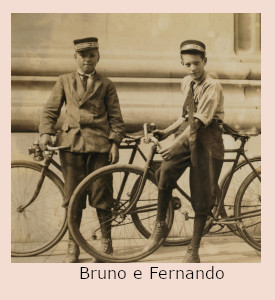
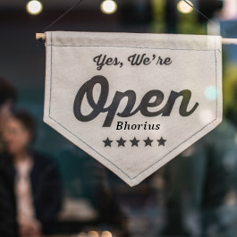
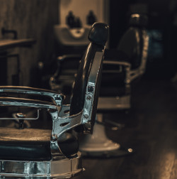
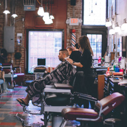

O começo Havia uma pequena cidade chamada Vila Esperança, onde a rotina era tranquila e a vida seguia seu curso natural. Nesse lugar, dois jovens amigos, Bruno e Fernando, cresceram juntos, compartilhando aventuras e sonhos. Desde pequenos, eles tinham um fascínio especial por cortes de cabelo e estilo masculino. Adoravam passar horas folheando revistas de moda e assistindo a vídeos de barbearias renomadas. Aquela paixão pelo universo dos cortes masculinos e a arte de fazer barbas só crescia a cada dia.  Primeiros Passos Conforme o tempo passava, Bruno e Fernando se tornavam cada vez mais habilidosos na arte da barbearia. Eles praticavam em si mesmos, em amigos e familiares, aperfeiçoando suas técnicas e aprimorando seu talento natural. A ideia de abrir uma barbearia começou a surgir como um sonho em suas mentes. Em 2017, decidiram dar um passo corajoso em direção a esse sonho. Com muita determinação e coragem, eles uniram suas economias e abriram as portas da Barbearia Bhorius, nome que criaram para refletir sua ousadia e personalidade única.  Tempos Difíceis No começo, não foi fácil. Eles enfrentaram desafios e incertezas típicos de quem começa um negócio. A barbearia era modesta, com apenas duas cadeiras e uma decoração simples, mas eles acreditavam no potencial de seu trabalho e no amor que colocavam em cada corte. Aos poucos, Bruno e Fernando foram conquistando a confiança dos clientes da cidade. A qualidade dos cortes, o atendimento diferenciado e a atmosfera acolhedora que criaram na barbearia foram fundamentais para cativar os clientes e fazer com que voltassem sempre.  A Franquia Com o tempo, a reputação da Barbearia Bhorius cresceu. As pessoas começaram a vir de outras cidades para ter a experiência única oferecida por Bruno e Fernando. A demanda aumentava e eles perceberam que era hora de expandir. Em vez de apenas abrir novas unidades, Bruno e Fernando decidiram transformar sua barbearia em uma franquia. Acreditavam que poderiam compartilhar seu conhecimento e treinar outros profissionais para replicar o sucesso da marca Bhorius em diferentes lugares. A maior Barbearia Hoje, a Barbearia Bhorius é uma franquia de sucesso, presente em várias cidades do país. Bruno e Fernando continuam sendo os fundadores e mentores, dedicados a transmitir seus valores e conhecimentos aos barbeiros que fazem parte dessa família. A Barbearia Bhorius continua a crescer, trazendo estilo, qualidade e excelência para os homens que buscam cuidados personalizados. A história de Bruno e Fernando é uma prova de que, com determinação e uma visão clara, é possível criar algo extraordinário a partir 
A missão da Bhorius é proporcionar aos clientes uma experiência única e inesquecível, cuidando tanto do visual quanto do bem-estar. A barbearia busca sempre inovar e oferecer serviços de alta qualidade, mantendo-se atualizada com as tendências do mercado. A equipe está sempre pronta para ouvir e atender as necessidades dos clientes, buscando a satisfação plena em cada atendimento. Na Bhorius, o cliente é o centro de tudo. A barbearia busca oferecer um ambiente acolhedor e agradável, onde o cliente possa relaxar e se sentir à vontade. A equipe da Bhorius está sempre pronta para prestar um atendimento personalizado e de alta qualidade, garantindo que cada cliente saia satisfeito e confiante com o seu visual. Se você está em busca de uma barbearia que se preocupa com o seu bem-estar e sua aparência, a Bhorius é o lugar certo para você! Escolher os serviços de uma barbearia de qualidade é fundamental para garantir um visual impecável e uma experiência agradável. E quando se trata da barbearia Bhorius, a escolha é ainda mais fácil. Com anos de tradição e excelência em atendimento, a Bhorius oferece serviços de alta qualidade, desde cortes de cabelo clássicos até as mais modernas técnicas de barba e cuidados com a pele. Ao escolher a Bhorius, você terá acesso aos melhores barbeiros da região, altamente qualificados e experientes para atender às suas necessidades e superar suas expectativas. Além disso, a barbearia oferece um ambiente confortável e acolhedor, com decoração sofisticada e equipamentos modernos para garantir a melhor experiência possível.